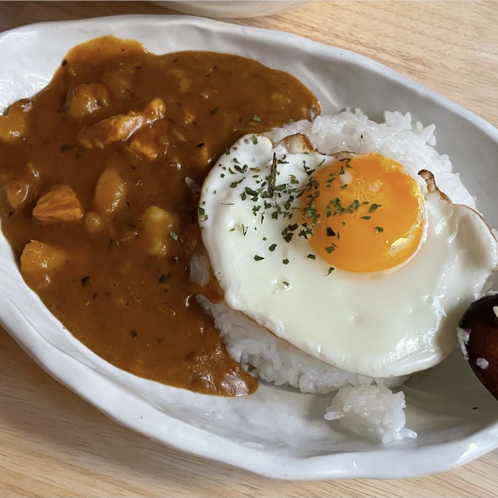

일본식카레

준비물
버터 50g
치킨스톡 1T
양파 3개
감자 2개
돼지고기 300g
토마토소스 100ml
고형카레 1/2개
달군 팬에 버터를 녹인다.
잘게 썬 양파를 약불에서 한 시간 볶으며 카레멜라이징한다.
양파를 다른 곳에 옮기고, 팬에 오일을 둘러 고기를 굽는다.
소금, 후추로 간을 해준다.
팬에 감자를 넣어 겉면을 익힌다.
익힌 재료들과 물, 고형카레, 토마토소스, 치킨스톡을 넣는다.
감자가 익을 때까지 끓여준다.
오래 끓일수록 맛있다.
완성!